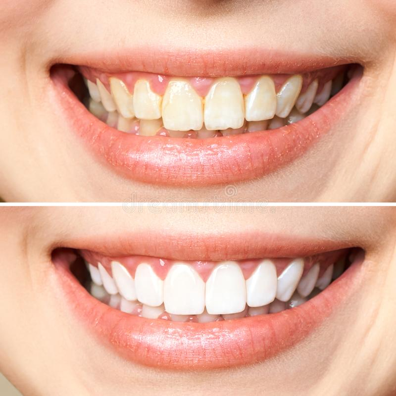

Profilaktyka
Głównym celem profilaktyki stomatologicznej jest zapobieganie chorobom przyzębia i zębów. Nieleczone choroby jamy ustnej mogą przyczyniać się do poważnych zaburzeń ogólnoustrojowych oraz chorób przewlekłych. Zapobieganie tym schorzeniom możliwe będzie dzięki regularnym wizytom w naszej klinice.
W ramach zabiegów profilaktycznych oferujemy:
- Skaling
Skaling jest zabiegiem polegającym na usunięciu twardych złogów, potocznie nazywanych kamieniem, z powierzchni zębów. Kamień powstaje na skutek mineralizacji płytki nazębnej, która składa się z resztek pokarmowych, bakterii i śliny. Płytka nazębna ulega mineralizacji pod wpływem kwasów i soli zawartych w pokarmach.
- Piaskowanie
Piaskowanie zębów polega na usunięciu z powierzchni zębów oraz z trudno dostępnych miejsc jak przestrzenie międzyzębowe cz bruzdy osadu oraz powierzchniowych przebarwień. Zabieg przeprowadza się przy pomocy piaskarki stomatologicznej, która wytwarza strumień piasku stomatologicznego, wody i powietrza pod dużym ciśnieniem. Precyzyjna końcówka piaskarki w jamie ustnej pacjenta oczyszcza wszystkie trudno dostępne powierzchnie zębów.
 - Polerowanie
Polerowanie zębów polega na zmniejszeniu widoczności rys i zagłębień na powierzchni zębów.
- Fluoryzacja
Fluoryzacja jest zabezpieczeniem zębów poprzez wzmocnienie szkliwa preparatem fluoru. Fluor stosuje się w formie pianki lub lakieru (lakierowanie zębów).,
- Lakowanie zębów
Metoda w profilaktyce antypróchnicowej polegająca na uzupełnianiu szczelin i bruzd w zębach zdrowych płynnym materiałem światłoutwardzalnym.
Stomatologia zachowawcza
Stomatologia zachowawcza to najszerszy dział stomatologii, zajmujący się wszystkimi metodami zachowania zębów w ich najbardziej naturalnym kształcie i właściwościach. Głównym zadaniem stomatologii zachowawczej jest zapobieganie oraz leczenie najbardziej rozpowszechnionej choroby zębów jaką jest próchnica oraz zachowanie zębów w jak najbardziej naturalnej postaci.
W naszej klinice oferujemy Państwu:
- wypełnienia wysokiej klasy kompozytami światłoutwardzalnymi, przy jednoczesnym zachowaniu jak największej ilości tkanek zęba,
- licówki kompozytowe
Przy rozległych ubytkach naszym Pacjentom proponujemy wykonanie uzupełnień typu inlay i onlay kompozytowych lub ceramicznych.
Sprawdź cenę zabieguEndodoncja
Endodoncja - leczenie kanałowe
Ta dziedzina stomatologii zajmuje się leczeniem chorób miazgi zębów oraz związanych z nimi powikłań. Leczenie endodontyczne polega na usunięciu wewnętrznej, zainfekowanej tkanki zęba zlokalizowanej w korzeniu/korzeniach zęba,oczyszczeniu kanału, jego dezynfekcji i wypełnieniu odpowiednimi materiałami. Kanał to struktura przebiegająca wewnątrz korzenia, w której przebiega nerw i naczynia krwionośne. To dlatego właśnie gdy proces chorobowy toczy się w korzeniu powoduje tak duże dolegliwości bólowe. W wyniku stanu zapalnego dochodzi do martwicy nerwu i naczyń, które to właśnie należy usunąć podczas leczenia endodontycznego, a powstałą pustą przestrzeń wypełnić materiałem.
W celu jak najlepszego opracowania i oczyszczenia kanałów zębowych w naszym gabinecie opracowujemy je mechanicznie, wykorzystując najwyższej klasy narzędzia rotacyjne. Kanały korzeni zębowych wypełniamy płynną gutaperką – jest to obecnie najlepszy system wypełniania kanałów zębowych na świecie, umożliwiający dokładne wypełnienie wszelkich zawiłości układu kanałowego zęba.
Gutaperka jest substancją pochodzenia naturalnego – pozyskuje się ją z soku drzew z rodziny sączyńcowatych, rosnących na Archipelagu Malajskim (przede wszystkim z drzewa gutaperkowca oraz eukomii wiązowatej). W normalnych warunkach jest tworzywem nieelastycznym, jednak po podgrzaniu wykazuje właściwości termoplastyczne, tzn. staje się miękka i ulega deformacji. Po przekroczeniu temperatury 65°C zyskuje postać płynną, natomiast pod wpływem światła i powietrza z powrotem twardnieje.
Dlaczego gutaperka

Po pierwsze, ta naturalna żywica nie drażni tkanek okołowierzchołkowych, stanowi więc materiał biozgodny, dobrze tolerowany przez nasz organizm. Po drugie – łatwo można ją wprowadzić do kanału zęba i – w razie konieczności – równie łatwo można ją usunąć. Po trzecie – wykazuje pewne właściwości przeciwbakteryjne i daje kontrast na zdjęciu rentgenowskim, dzięki czemu można ocenić skuteczność przeprowadzonego wcześniej leczenia. Dodatkowo nie przebarwia zębów, jest stabilna objętościowo
W celu zapewnienia w pełni sterylnych i suchych (wolnych od śliny) warunków do opracowywania kanałów wykorzystujemy koferdam. Leczenie kanałowe obejmuje: znieczulenie, koferdam, opracowanie kanałów, wypełnienie kanałów, opatrunki
Endodoncja - leczenie pod mikroskopem
Metoda ta jest dużo bardziej precyzyjna od tradycyjnej i charakteryzuje się wysoką skutecznością. Stosowana jest w trudnych przypadkach endodontycznych, gdy korzenie zębów są zakrzywione , a kanały zobliterowane (mają zamknięte światło) czy nadliczbowe. Leczenie w powiększeniu pozwala dostrzec pęknięcia, perforacje czy też pozwala usunąć złamane narzędzia. Leczenie kanałowe obejmuje: znieczulenie pacjenta, koferdam, maszynowe opracowanie kanałów z użyciem mikroskopu stomatologicznego, wypełnienie kanałów płynną gutaperką, założenie opatrunków.
Leczenie zęba pod mikroskopem jest coraz częściej wybierane przez pacjentów, ponieważ przynosi większą skuteczność leczenia, przewidywalność oraz obarczone jest znacznie mniejszym ryzykiem powikłań. Czas tego typu leczenia ogranicza się zazwyczaj do jednej wizyty, jednak w szczególnych przypadkach może wydłużyć się do 2-3 wizyt.
Sprawdź cenę zabieguProtetyka
Protetyka stomatologiczna to dział stomatologii, który zajmuje się odtwarzaniem odpowiedniego zgryzu i wyglądu zębów, w związku z ich utratą lub mocnym uszkodzeniem, jeśli nie jest już możliwe leczenie metodami stomatologii zachowawczej.
W toku leczenia protetycznego stosuje się protetyczne uzupełnienia braków w uzębieniu w postaci ruchomej i stałej. Do ruchomych uzupełnień zalicza się przede wszystkim protezy, które mogą być wyjmowane z jamy ustnej. Stosuje się je w sytuacji utraty całości lub większości uzębienia. Istnieje kilka odmian protez, wśród których warto wymienić chociażby protezy akrylowe i szkieletowe (znajdujące się na podbudowie metalowej).
Do stałych uzupełnień protetycznych natomiast można zaliczyć mosty wypełniające kilku zębowe braki, a także korony stosowane głównie przy odbudowywaniu poważnie zniszczonych zębów. Licówki z kolei to uzupełnienia odtwarzające zniszczone powierzchnie przednie zębów w postaci cienkiej warstwy ceramiki przyklejanej do zęba. Wkłady koronowo korzeniowe stosuje się w zębach po leczeniu endodontycznym. Składają się one z części korzeniowej , przyklejanej do korzenia i zewnętrznej – koronowej na którą osadzamy sztuczną koronę zęba.
W naszym gabinecie oferujemy Państwu:
1. Uzupełnienia stałe
- korony pełnoceramiczne
- mosty pełnoceramiczne
- licówki pełnoceramiczne i kompozytowe
- wkłady koronowo-korzeniowe z metalu lub z włókna szklanego
2. Uzupełnienia ruchome
- Protezy szkieletowe
- Protezy całkowite
- Protezy kombinowane
Chirurgia
Chirurgia stomatologiczna jest to dziedzina stomatologii zajmująca się leczeniem operacyjnym jamy ustnej i okolic przyległych. W naszym gabinecie oferujemy:
- ekstrakcję (usuwanie zębów), operacyjne usuwanie zębów mądrości jak i zębów zatrzymanych lub niewyrżniętych,
- odsłanianie zębów zatrzymanych,
- plastykę połączeń z zatoką szczękową,
- hemisekcję, resekcję wierzchołka korzenia,
- podcinanie wędzidełek
Periodontologia

Periodontologia zajmuje się niezwykle istotną częścią stomatologii jaką jest choroba tkanek przyzębia (dziąsła, kości i ozębna) oraz błon śluzowych jamy ustnej.
Najczęstszymi objawami chorób przyzębia jest rozchwianie i przemieszczanie zębów lub ich całkowita utrata, nieprzyjemny zapach z ust, obrzęk i bóle dziąseł oraz odsłanianie szyjek zębowych.
Pamiętajmy, że zdrowe dziąsła nigdy nie krwawią.
Dzięki mikrochirurgii periodentologicznej możemy skorygować odsłonięte szyjki zębów, zbyt długie lub zbyt krótkie korony zębów, czy też zlikwidować ubytek kości oraz nieregularną linię dziąsła.
Stomatologia estetyczna
Każdy z nas czując się dobrze sam ze sobą staje się pewniejszy siebie i ma wyższą samoocenę. Dlatego tak istotna staje się estetyka stomatologiczna, która zajmuje się wyglądem uzębienia i twarzy. Zaliczamy tu czyszczenie i wybielanie zębów, korygowanie kształtu i koloru uzębienia. Wykorzystujemy korony, licówki porcelanowe oraz tak istotne dla równych zębów leczenie ortodontyczne.
Sprawdź cenę zabieguOrtodoncja
Ortodoncja jest to dziedzina stomatologii, która zajmuje się leczeniem wad zgryzu, wad szczękowo – twarzowych oraz korygowaniem nieprawidłowości zębowych. Leczenie ortodontyczne przeprowadza się u pacjentów w każdym wieku z powodów profilaktycznych, leczniczych i estetycznych.
W naszej Klinice dbamy o wysoki standard i nowoczesność leczenia ortodontycznego, a także holistyczne podejście do pacjenta.
Leczenie ortodontyczne poprzedzone jest kompleksową diagnostyką i ustaleniem precyzyjnego planu leczenia.
Szczególną uwagę zwracamy na profilaktykę rozwoju wad zgryzu u naszych najmłodszych pacjentów i wówczas gdy jest to potrzebne rozpoczynamy terapię ortodontyczną, nie czekając do wieku nastoletniego. Konieczność podjęcia leczenia może bowiem wynikać z:
- Nieprawidłowego przełykania, z tłoczeniem języka między zęby,
- Oddychania przez usta, chrapania,
- Szkodliwych nawyków np.: ssanie kciuka, przedłużone ssanie smoczka
Oczywiście pod naszą opiekę przyjmujemy nie tylko dzieci i nastolatki, ale również osoby dorosłe, u których za pocą leczenia ortodontycznego możemy przywrócić prawidłową funkcję aparatu zębowego, zadbać o profilaktykę chorób przyzębia, a także uwolnić od skrywanych latami kompleksów estetycznych.
Sprawdź cenę zabiegu